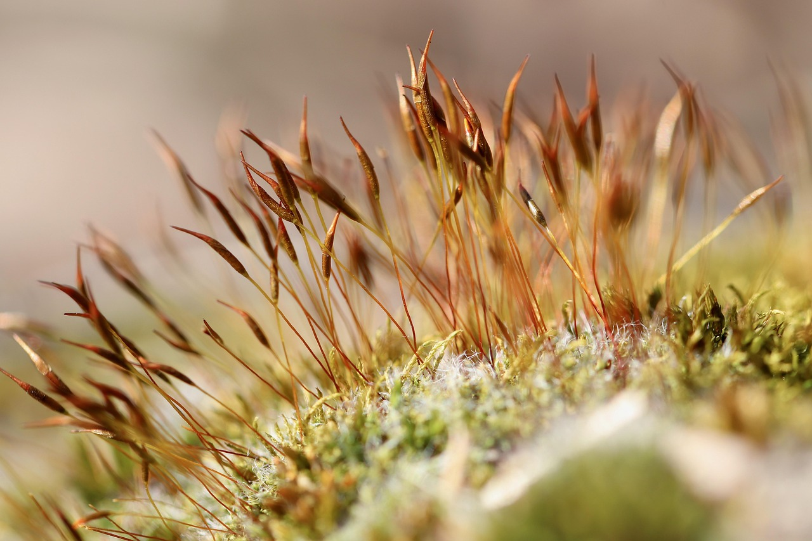
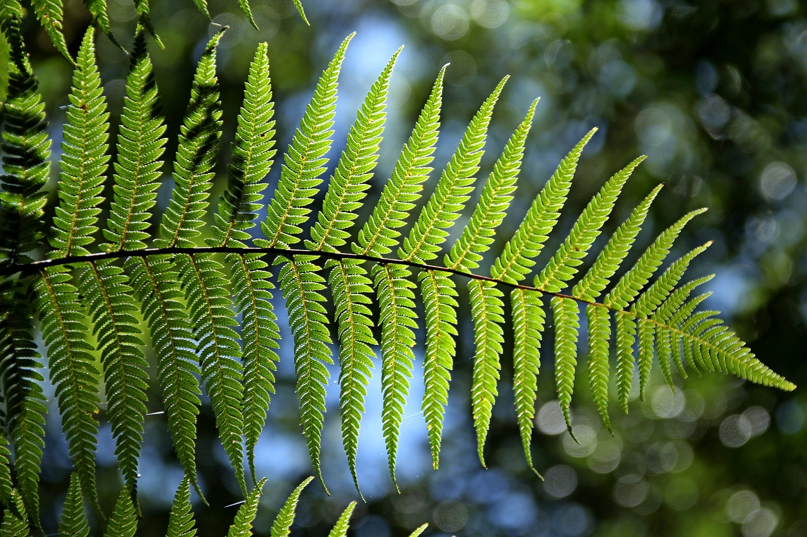
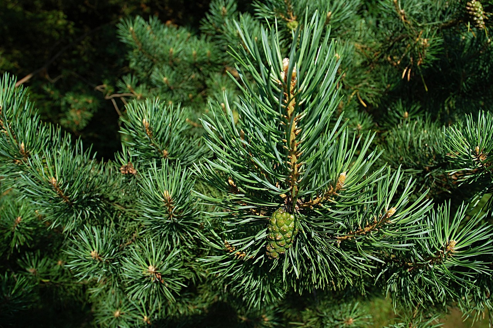
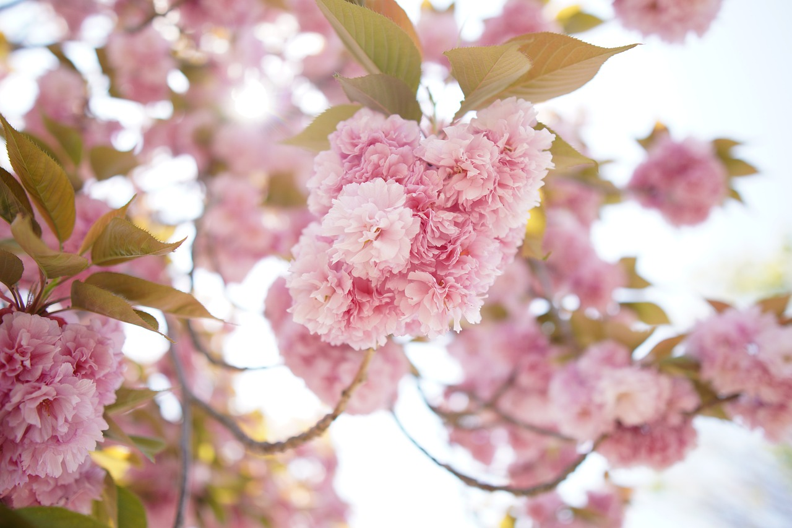
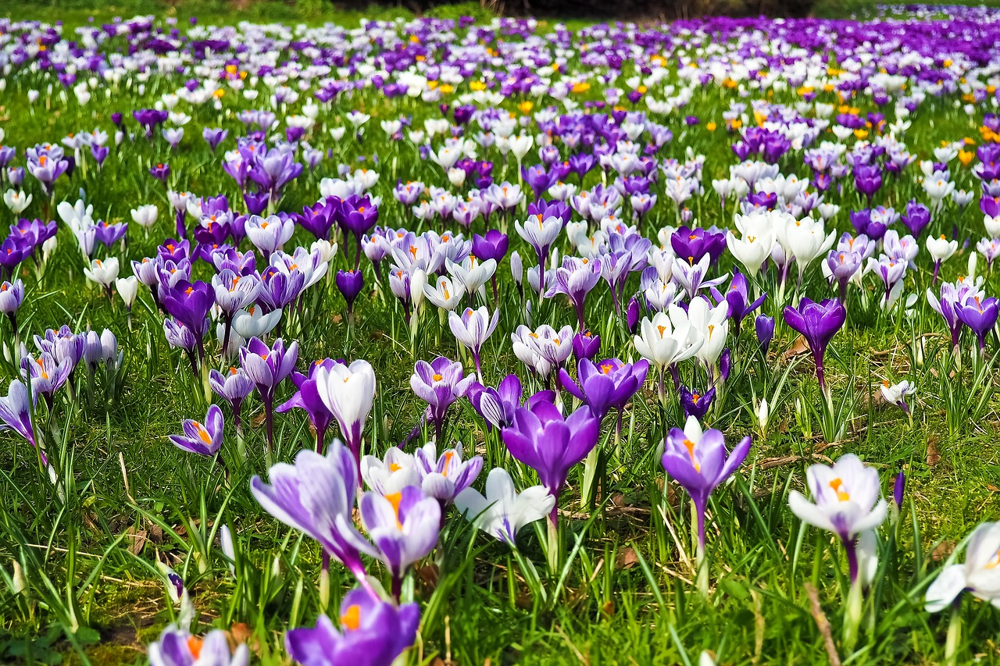
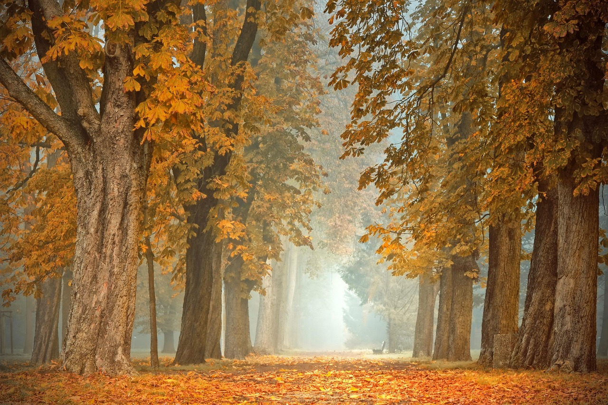
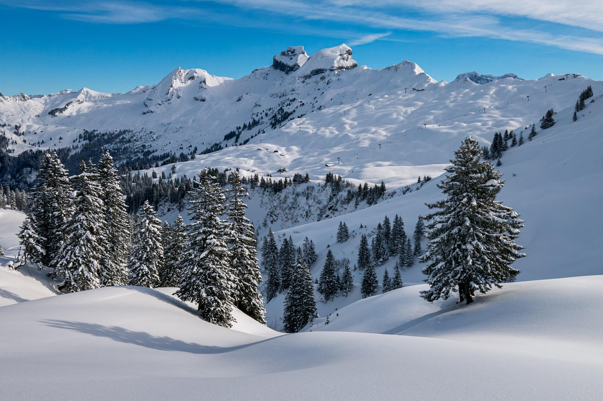

A botânica é o campo da ciência que se debruça sobre o estudo das plantas — mas dizer apenas isso seria como reduzir uma floresta inteira a uma única folha. Falar de botânica é falar da vida que respira em silêncio, das raízes que sustentam o mundo, e da dança invisível que as folhas fazem com o vento para manter o equilíbrio do planeta.
As plantas estão em todos os lugares: nos pratos que comemos, nas roupas que vestimos, no ar que respiramos e até nas memórias que guardamos. Cada flor carrega uma função, uma beleza, e uma importância que vai além do olhar. Quando falamos de plantas, estamos falando de alimento — não só para nós, humanos, mas para toda a cadeia alimentar. Estamos falando de abrigo para pequenos seres, sombra para o descanso, e proteção contra a erosão que tenta corroer o solo. Estamos falando de regulação climática, de umidade, de equilíbrio. Estamos falando de fotossíntese — um milagre bioquímico que transforma luz em vida e devolve oxigênio ao mundo.
As plantas são silenciosas, mas incansáveis trabalhadoras da natureza. Enquanto o mundo corre apressado, elas permanecem firmes, convertendo luz em energia, brotando novas folhas, oferecendo flores e frutos. São elas que mantêm o planeta respirável, fértil e belo. E mesmo com toda essa responsabilidade ecológica, ainda se prestam ao papel de encantar. Sim, elas também existem para o deleite: para perfumar, enfeitar, colorir. São usadas na ornamentação de jardins, parques, praças, varandas e até nos cantinhos mais improváveis das casas — porque onde há uma planta, há um pedaço de vida pulsando.
Economicamente, são uma verdadeira riqueza. Fornecem madeira para construções e móveis, fibras para tecidos, matéria-prima para cosméticos, perfumes e medicamentos. A indústria farmacêutica se curva diante de suas propriedades. E ainda assim, muitas vezes, nos esquecemos de agradecer por tamanha generosidade.
Por isso, este site nasce como um pequeno jardim digital — um espaço de contemplação e aprendizado, onde a beleza e a ciência caminham de mãos dadas. Aqui, você encontrará informações, curiosidades, dicas e encantos sobre o universo vegetal. Porque cuidar das plantas é também uma forma de cuidar de nós mesmos. E quem presta atenção nelas, percebe: as plantas têm muito a nos ensinar. Basta parar, respirar fundo, e observar. 🌱




As briófitas são plantas avasculares, ou seja, não possuem vasos condutores como xilema e floema, o que limita seu porte e as mantém dependentes de ambientes úmidos para sobreviver e se reproduzir. Consideradas as mais primitivas entre as plantas terrestres, elas representam um importante passo evolutivo na conquista do ambiente terrestre. Seu ciclo de vida é marcado pela alternância de gerações, sendo o gametófito a fase dominante — uma característica única em comparação aos outros grupos vegetais. Embora pequenas, as briófitas exercem funções ecológicas fundamentais: ajudam na retenção da umidade do solo, previnem a erosão, criam micro-habitats e ainda servem como bioindicadoras da qualidade do ar. Entre os principais representantes, destacam-se os musgos, as hepáticas e os antóceros, que colonizam desde troncos até rochas sombreadas, mostrando que mesmo as formas de vida mais discretas têm grande importância nos ecossistemas.
As pteridófitas são plantas vasculares que, embora não produzam sementes, já apresentam tecidos condutores — o xilema e o floema — permitindo maior porte e maior diversidade de ambientes em comparação às briófitas. Esse grupo representa um avanço evolutivo importante, pois marca a transição para estruturas mais complexas e adaptadas ao meio terrestre. Seu ciclo de vida também envolve alternância de gerações, mas, diferentemente das briófitas, aqui o esporófito é a fase dominante, o que evidencia a sofisticação progressiva do reino Plantae. As pteridófitas dependem da água para a reprodução sexuada, já que seus gametas ainda precisam nadar até a oosfera, o que as mantém ligadas, em parte, à umidade. Esteticamente marcantes e ecologicamente relevantes, elas ajudam na formação de solos, protegem encostas e contribuem para o equilíbrio dos ecossistemas tropicais. Entre os exemplos mais conhecidos estão as samambaias, avencas e cavalinhas — plantas que unem beleza, resistência e um passado evolutivo fascinante.
As gimnospermas são plantas vasculares que marcam um passo decisivo na evolução vegetal: o surgimento da semente, estrutura que protege o embrião e facilita sua dispersão em ambientes variados. Diferentemente das angiospermas, suas sementes não são envolvidas por frutos — daí o nome "gimnosperma", que significa "semente nua". Com o esporófito como fase dominante, seu ciclo de vida é completamente adaptado ao ambiente terrestre, dispensando a água como meio obrigatório para a fecundação. A polinização é geralmente anemófila, ou seja, feita pelo vento, o que possibilita a reprodução mesmo em climas mais secos. As gimnospermas são, em sua maioria, árvores perenes e resistentes, com folhas em forma de agulha e crescimento lento, características que as tornam fundamentais na formação de florestas boreais e temperadas. Entre os representantes mais conhecidos estão os pinheiros, ciprestes e araucárias — plantas imponentes que resistem ao tempo e demonstram como a evolução vegetal construiu estruturas cada vez mais independentes e eficientes
As angiospermas são o grupo mais recente, diverso e evoluído do reino Plantae. Caracterizam-se por produzir flores e frutos, estruturas que revolucionaram a forma como as plantas se reproduzem e se espalham pelo planeta. As flores funcionam como atrativos para polinizadores — como insetos, aves e até mamíferos — enquanto os frutos protegem e facilitam a dispersão das sementes. Essa sofisticação reprodutiva permitiu às angiospermas colonizar praticamente todos os ambientes terrestres, dos desertos às florestas tropicais. Assim como nas gimnospermas, o esporófito é a fase dominante do ciclo de vida, mas nas angiospermas a fecundação é dupla — um processo exclusivo e altamente eficiente. Possuem grande variação morfológica e funcional, o que as torna essenciais para os ecossistemas e para a economia humana: são fonte de alimento, madeira, fibras, medicamentos, óleos e combustíveis. Com milhões de espécies catalogadas, as angiospermas são a prova viva de como a diversidade e a adaptação são chaves para o sucesso evolutivo.

A primavera é uma estação marcada pela renovação e pelo florescimento. Após o frio do inverno, a temperatura começa a subir e os dias se alongam, permitindo mais luz solar. Esse aumento na luminosidade e a elevação da temperatura ativam processos vitais nas plantas, como a germinação e o crescimento das flores. A precipitação também é mais constante nessa estação, favorecendo a vegetação que começa a se espalhar e cobrir o solo com cores vibrantes. A natureza se torna um verdadeiro espetáculo de flores, folhas e cores. A fauna também entra em um período de atividade intensa, com o despertar de muitos animais que estavam em hibernação, e o início da reprodução de várias espécies. É a estação da renovação, quando tudo volta a florescer.
O verão é a estação mais quente do ano, com temperaturas elevadas e dias longos, o que proporciona uma intensa exposição à luz solar. Esse é o período de maior atividade fotossintética das plantas, que aproveitam a abundância de luz e calor para crescer rapidamente. As plantas, principalmente as de regiões tropicais, estão no auge de seu desenvolvimento, e muitos frutos começam a amadurecer. A evaporação é alta, o que pode resultar em uma maior necessidade de água por parte das plantas e dos animais. Em algumas regiões, o verão também pode ser marcado por chuvas intensas, criando um contraste entre a abundância de calor e o aumento da umidade. A fauna está em plena atividade, com muitos animais buscando alimento para a reprodução ou para se preparar para o outono.

O outono é um período de transição entre o calor do verão e o frio do inverno. As temperaturas começam a cair, os dias ficam mais curtos e a luz solar diminui gradualmente. As plantas começam a se preparar para o inverno, e muitas delas iniciam o processo de queda das folhas, economizando energia e recursos para o período de dormência. As cores das folhas mudam, criando um espetáculo visual com tons de vermelho, laranja e amarelo. A quantidade de chuvas tende a ser moderada, o que favorece a decomposição das folhas caídas e a renovação do solo. A fauna também se prepara para o inverno, com alguns animais acumulando reservas de alimento ou migrando para climas mais amenos. O outono é um período de amadurecimento e recolhimento.

O inverno é caracterizado pelo frio intenso, noites longas e dias curtos. As temperaturas baixas reduzem a atividade biológica na natureza, e muitas plantas entram em um período de dormência. Algumas plantas perenes, como as coníferas, mantêm suas folhas (ou agulhas), adaptadas para resistir ao frio, enquanto outras, como as decíduas, perdem suas folhas para economizar energia. A precipitação pode ocorrer na forma de neve ou chuva fria, e o solo tende a ficar congelado ou saturado de água, dificultando a absorção de nutrientes pelas plantas. A fauna se adapta ao inverno de diferentes formas, com alguns animais hibernando ou migrando, enquanto outros, como aves, se alimentam de fontes que ainda restam nas árvores ou nos solos. O inverno é, portanto, uma estação de descanso e preservação de recursos, preparando o ecossistema para o ciclo seguinte.
Assim como uma semente precisa ser lançada à terra para crescer, toda boa troca começa com uma simples mensagem. Se você tem dúvidas, sugestões, curiosidades ou só quer conversar sobre o incrível universo das plantas, este é o espaço certo.
Preencha os campos abaixo e nos envie sua mensagem — estamos aqui para ouvir, cuidar e responder com carinho.